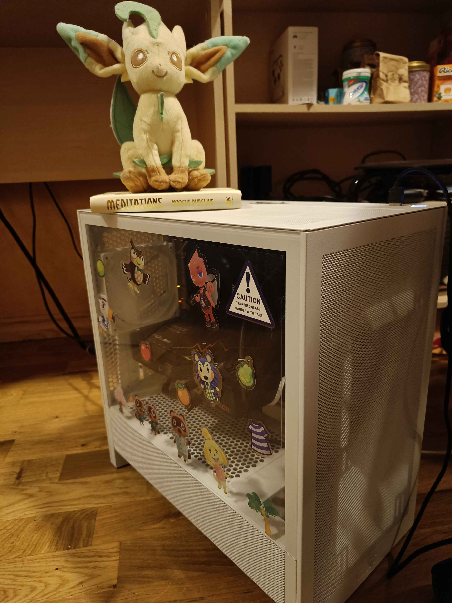
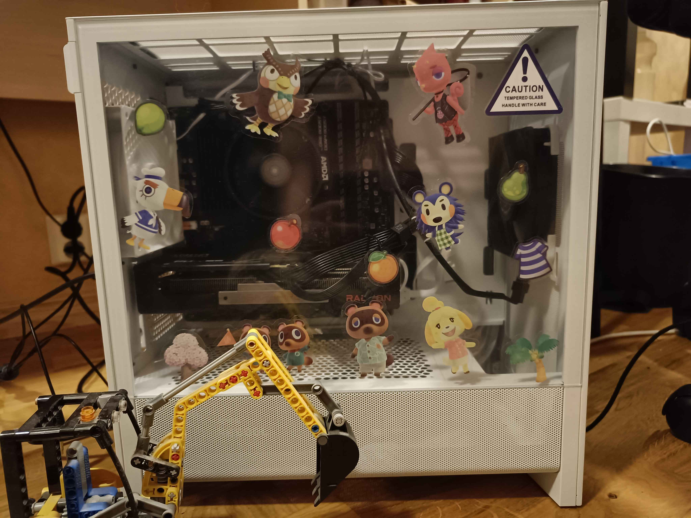

Remember Myspace? Well a lot of peolpe are nostalgic for it, and someone made SpaceHey, which is essentially a project to bring back old myspace.
One of the main selling points is the ability to massively customize your profile using HTML and CSS. Which sounded fun to me. So I made a profile,
and I've been messing around a lot with the customization. Check it out(warning: highly silly): Super Duper Cool and Handsome Gamer
PS: hover your mouse over the P switch to make the Mario bros do a cool animation:)



I always kinda wanted to build a pc to see what it was like and also to play cool new video games at high graphics settings. High-ish at least. My 10 year old 1080p monitor still works good so I'm sticking with it.
I also have experience with Linux now because Microsoft wanted me to pay to use their OS while also ending support for Windows 10. So if I'm using a new OS anyway that's the perfect chance to see what Linux is like.(Mainly I liked it being free haha)